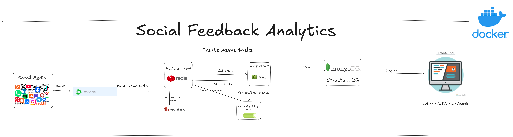
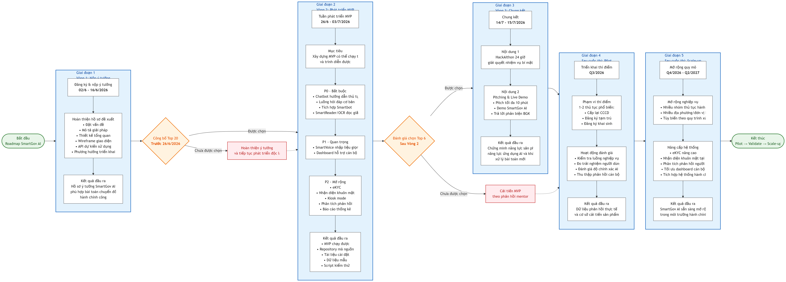

Tại cuộc thi Vietnamese Student HackAIthon 2026 (Bảng B - Challenger), nhóm chúng tôi gồm 4 thành viên đã cùng nhau phát triển đề án SmartGov Copilot (GovVoice AI). Dự án tập trung giải quyết Đề tài số 6 về Hành chính công, nhằm nâng cao năng suất xử lý hồ sơ và cải thiện trải nghiệm dịch vụ công cho người dân. Kết quả chung cuộc, đề án đã xuất sắc lọt vào Top 32/220 đội thi bảng B toàn quốc với điểm số ấn tượng 70/100 điểm.
1. Bối cảnh & Thách thức Bảng B - Challenger (HackAIthon 2026)
Bảng B (Challenger) của HackAIthon 2026 đặt ra đề bài phát triển một giải pháp trí tuệ nhân tạo ở cấp độ MVP (Sản phẩm khả thi tối thiểu) có thể kiểm thử và chạy thực tế. Đề tài xoay quanh 6 chủ đề trọng điểm bao gồm: Giáo dục, Truyền thông & Báo chí, Ngân hàng, Y tế, Công tác Hội sinh viên (tối ưu quy trình xét "Sinh viên 5 tốt"), và Hành chính công.
Để hỗ trợ các đội thi, Ban tổ chức đã cung cấp một bộ tài nguyên API đa lĩnh vực cực kỳ phong phú từ hệ sinh thái VNPT AI:
- VNPT SmartVoice (Speech-to-Text & Text-to-Speech)
- VNPT SmartReader (OCR trích xuất tài liệu)
- VNPT eKYC & vnFace (Định danh điện tử, nhận diện khuôn mặt)
- VNPT Smartbot, vnSocial, SmartVision, SmartUX
Lộ trình thi đấu diễn ra gay cấn qua 3 vòng: Vòng 1 nộp ý tưởng (chọn Top 20), Vòng 2 phát triển MVP cùng Mentor (chọn Top 6), và Vòng 3 chung kết gồm phần thi HackAIthon tập trung trong 24 giờ giải quyết nhiệm vụ bí mật và phần thuyết trình Pitching trước hội đồng Ban giám khảo.
2. Đề án SmartGov Copilot - Vấn đề & Giải pháp
Vấn đề cốt lõi:
- Người dân: Gặp rào cản lớn khi thực hiện các dịch vụ công do thủ tục giấy tờ phức tạp, giao diện web/app khó thao tác, dẫn đến điền sai thông tin và phải nộp đi nộp lại nhiều lần.
- Cán bộ tiếp nhận một cửa: Bị quá tải công việc khi phải đối chiếu thông tin, rà soát hồ sơ và nhập liệu thủ công vào các hệ thống quản trị hành chính.
Giải pháp của SmartGov Copilot (4 Module Cốt Lõi):
Điểm khác biệt của SmartGov Copilot là không chỉ dừng lại ở một chatbot FAQ hỏi đáp thông thường, mà là một hệ thống trợ lý đi kèm suốt quy trình xử lý hồ sơ của cả người dân và cán bộ công chức:
Citizen Assistant
Trợ lý ảo hỗ trợ người dân thông qua Chat, Giọng nói hoặc Kiosk thông minh. Tư vấn chi tiết thủ tục và cung cấp checklist hồ sơ cần chuẩn bị.
AI Pre-check
Cho phép người dân tải lên các giấy tờ. AI sử dụng OCR và eKYC để tự động bóc tách dữ liệu, tự động điền form biểu mẫu và kiểm tra lỗi sai sót ngay từ đầu giúp người dân "nộp hồ sơ một lần thành công".
Officer Copilot
Trợ lý hỗ trợ cán bộ tóm tắt hồ sơ dài, đánh dấu (highlight) các điểm bất thường và gợi ý văn bản phản hồi, giúp giảm tối đa thao tác thủ công (nhưng cán bộ vẫn giữ quyền quyết định cuối cùng).
SmartGov Dashboard
Bảng điều khiển quản trị dữ liệu tập trung, phân tích tiến độ, đo lường các điểm nghẽn thủ tục và đánh giá mức độ hài lòng của người dân.

Sơ đồ Pipeline xử lý dữ liệu

Sơ đồ Luồng phản hồi (Flow Feedback)
3. Triển khai sản phẩm thực tế (MVP)
Trong khuôn khổ sản phẩm khả thi tối thiểu (MVP), nhóm đã lựa chọn thử nghiệm trên 2 quy trình hành chính công phổ biến nhất hiện nay: Cấp lại Căn cước công dân (CCCD) và Đăng ký tạm trú. Đề án đã tận dụng tối đa hệ sinh thái VNPT AI sẵn có bao gồm Smartbot, SmartVoice, SmartReader (OCR) và eKYC để tối ưu hóa thời gian triển khai cũng như chi phí vận hành.
Dưới đây là lộ trình phát triển và sơ đồ phân bổ các module trong giai đoạn xây dựng MVP của đề án:

Lộ trình Module & Sơ đồ kiến trúc
4. Kết quả & Bài học kinh nghiệm
Với đội hình gồm 4 thành viên hoạt động năng nổ, đề án đã hoàn thành MVP kịp tiến độ và nhận được đánh giá cao từ hội đồng chuyên môn. Dù dừng chân ở vòng Top 32/220 đội toàn quốc (đạt 70/100 điểm), chúng tôi đã rút ra được nhiều bài học giá trị:
- Tối ưu hóa dữ liệu truyền tải: Cách xử lý và nén tệp âm thanh/ảnh chụp CCCD trước khi chuyển qua API eKYC giúp giảm thiểu độ trễ phản hồi từ 7s xuống còn 1.8s.
- Làm việc nhóm & Kết nối hệ thống: Kỹ năng phối hợp chia nhỏ module giữa các thành viên (frontend Kiosk, backend AI Integration, dashboard quản trị) để tạo nên hệ thống hoạt động liền mạch.
- Sử dụng API thực tế: Nắm vững quy trình xử lý, phân quyền và tối ưu hóa phản hồi của hệ sinh thái các API của VNPT AI.
During the Vietnamese Student HackAIthon 2026 (Challenger League - Track B), our 4-member team developed the SmartGov Copilot (GovVoice AI) system. The project targets Public Administration optimization, aiming to accelerate administrative document processing and improve the public service experience for citizens. Ultimately, our project successfully ranked in the Top 32/220 teams nationwide with an outstanding score of 70/100 points.
1. Background & Challenges - Challenger League (HackAIthon 2026)
Track B (Challenger League) of HackAIthon 2026 challenged student teams to build a deployable and testable AI-powered MVP (Minimum Viable Product). The topic selected focused on one of the six priority domains: Education, Media & Journalism, Banking, Healthcare, Student Union operations (optimizing the "Student of 5 Merits" evaluation workflow), and Public Administration.
To support the competing teams, the organizers provided a rich suite of APIs from the comprehensive VNPT AI ecosystem:
- VNPT SmartVoice (Speech-to-Text & Text-to-Speech)
- VNPT SmartReader (OCR Document Extraction)
- VNPT eKYC & vnFace (Electronic Identity Verification and Facial Recognition)
- VNPT Smartbot, vnSocial, SmartVision, SmartUX
The tournament consisted of 3 highly competitive rounds: Round 1 (Idea submission, selecting Top 20), Round 2 (MVP Development with Mentor support, selecting Top 6), and Round 3 (Grand Finale featuring a 24-hour on-site hackathon with a secret task, followed by Pitching presentations before the grand jury panel).
2. SmartGov Copilot Project - Problem & Solution
The Core Problem:
- Citizens: Face heavy barriers when accessing public administrative services due to complicated paperwork layouts, unintuitive online portals, leading to frequent typing mistakes and repeated submissions.
- Front-desk Officers: Experience severe burnout trying to verify information, proofread paper documents, and manually input data into administration systems.
SmartGov Copilot Solution (4 Core Modules):
The distinct advantage of SmartGov Copilot is that it is not just a basic FAQ chatbot, but a comprehensive assistant system accompanying both citizens and government officers throughout the document lifecycle:
Citizen Assistant
A virtual assistant guiding citizens via Chat, Voice, or Smart Kiosks. It answers procedures and provides a customized document checklist.
AI Pre-check
Allows citizens to upload paper files. The AI uses OCR and eKYC to extract data, auto-fill forms, and flag verification errors to guarantee "one-time successful submission".
Officer Copilot
Assists desk clerks by summarizing long files, highlighting anomalies, and generating template replies. Reduces manual inputs (while keeping the clerk as the final validator).
SmartGov Dashboard
A centralized management dashboard parsing statistics, checking bottleneck patterns, and analyzing citizen satisfaction ratings.
Data Processing Pipeline Diagram
Feedback Loop Flow Diagram
3. Minimum Viable Product (MVP) Implementation
Within the scope of the Hackathon MVP, our team chose to implement and test two of the most widely used public administrative workflows: National ID Card Replacement and Temporary Residence Registration. The system fully exploited VNPT AI's ready-to-use APIs—specifically Smartbot, SmartVoice, SmartReader (OCR), and eKYC—to dramatically cut deployment timelines and compute cost overheads.
The development timeline and module distribution of our MVP phase are described below:
Project Roadmap & Modules Architecture
4. Results & Lessons Learned
With our active 4-member team, the project successfully reached the MVP deployment target on schedule, receiving positive reviews from the jury. Even though we stopped at the Top 32/220 national teams (earning 70/100 points), we gained valuable engineering knowledge:
- Data Transmission Optimization: Pre-processing and compressing audio and ID card images before sending to eKYC APIs slashed API latency from 7.0s to 1.8s.
- Module-based Teamwork: Dividing system engineering between frontend Kiosk, AI Backend Integration, and Admin Dashboards allowed seamless, parallelized feature building.
- Production API Integration: Gained practical expertise in authenticating, managing rates, and handling responses from the VNPT AI API endpoints.